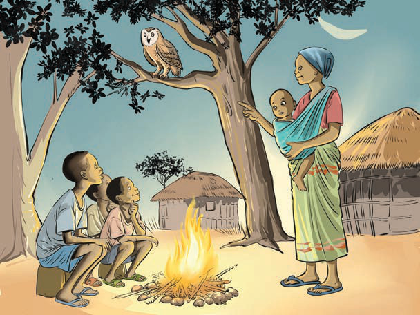

(b) Listen to the story about the following picture and answer questions that follow.

Questions
1. Who were the main characters?
2. What happened at the beginning of the story?
3. What happened in the middle?
4. How did the story end?

1. Who were the main characters?
2. What happened at the beginning of the story?
3. What happened in the middle?
4. How did the story end?